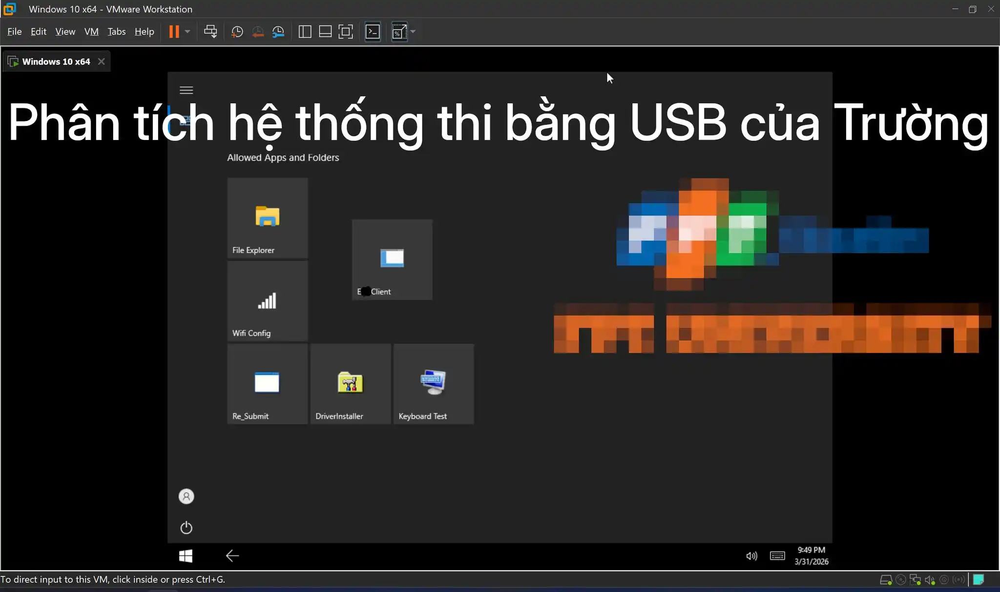

Analysis of the exam system at University F**
Source: Facebook
This is an analytical post regarding the USB-based final exam system used by University F**. This is Windows To Go - a complete Windows OS contained within a 64GB USB drive, encrypted with Bitlocker.
Read full: here.

Quick Summary:
How it works
-
Students plug the USB into their personal laptops and boot from the USB instead of using the pre-installed operating system.
-
The USB contains Windows 10 IoT Enterprise LTSC running in Kiosk mode - allowing only the exam software to run while blocking all other operations.
Analysis Process
-
USB Cloning: The author cloned the entire 64GB drive into an
.imgbằngdd. -
Bitlocker Decryption: The OS partition was encrypted, but the decryption key (the
.BEKfile) was located right on the EFI partition - requiring no password for access.
Content Analysis
-
The OS is configured to: auto-reboot upon crashing, utilize performance tweaks, and has file indexing disabled.
-
It includes Snappy Driver Installer + Driver Installer to ensure driver compatibility across various hardware.
-
Logs indicate that the USB was created and tested within VirtualBox.
Exam Software (E**Client.exe):
-
Runs in fullscreen mode and blocks Alt+Tab.
-
Captures a photo of the candidate via webcam at the start of the exam.
-
Submits the exam via an internal server within the university.
Booting in a VM::
- The author converted the
.img->.vmdkand booted it in VMWare for verification - confirming that the Kiosk functions exactly as described.
Conclusion
-
The system is quite secure - cheating is very difficult or impractical.
-
Even if the USB restrictions were bypassed, secretly opening additional software in Kiosk mode without being detected by a proctor is nearly impossible.
-
Disadvantages: The cost of purchasing ~300 64GB USB drives is quite high, and stability depends on the diverse drivers and hardware of the students’ laptops.